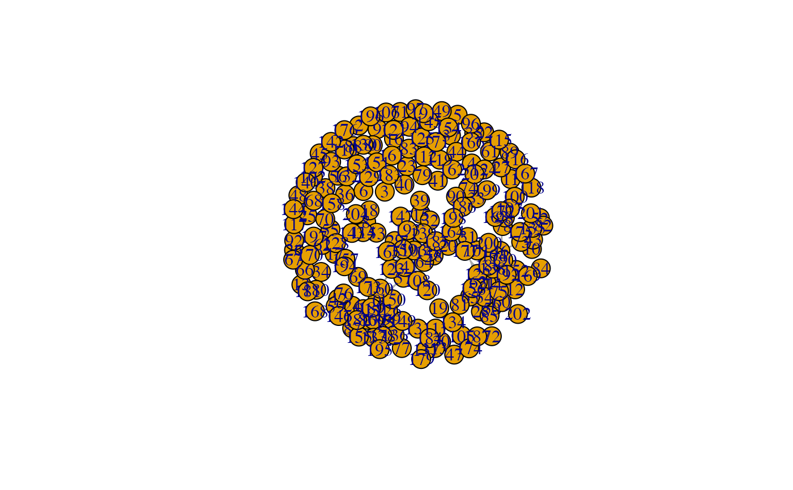
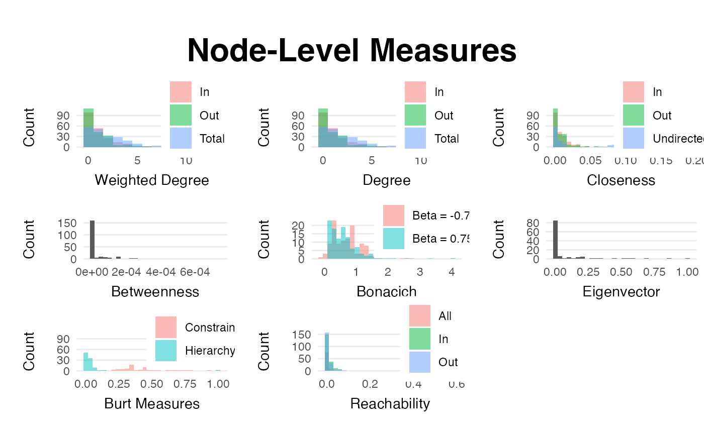
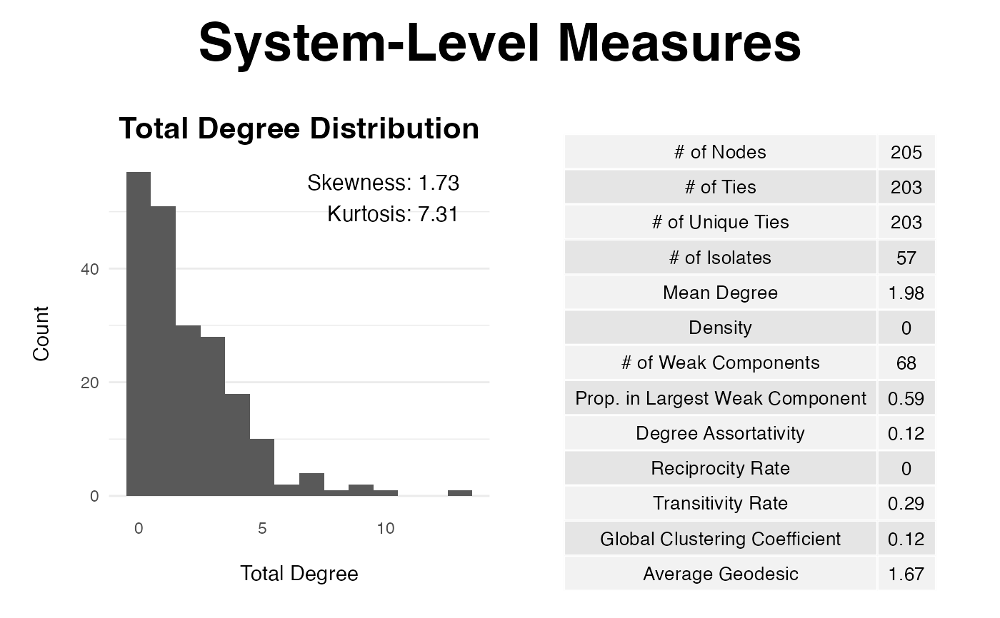
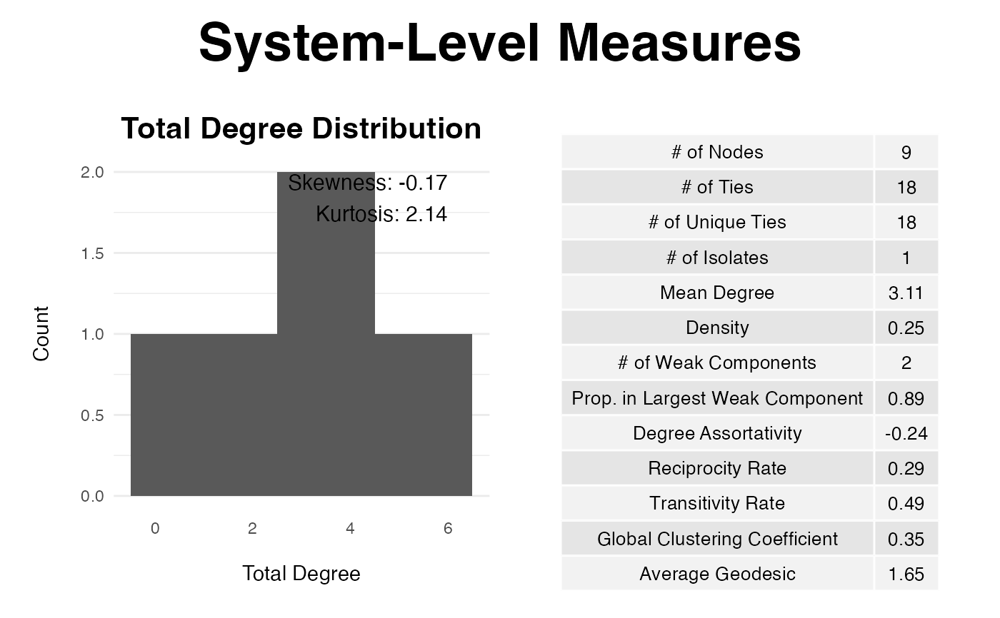
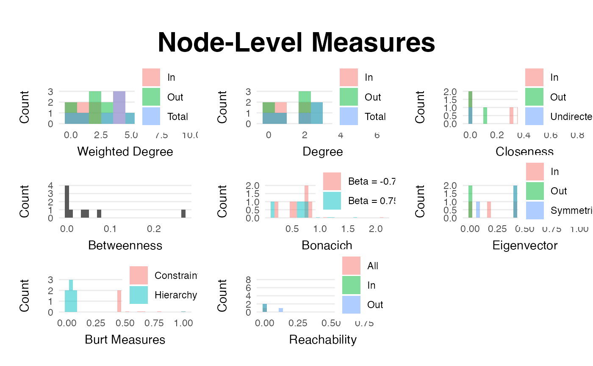

Network Cleaning and Variable Calculation (netwrite)
netwrite.RdThe netwrite function reads in relational data of several formats and processes them into a set of standardized outputs. These outputs include sets of commonly calculated measures at the individual node and network-wide levels.
netwrite(
data_type = c("edgelist"),
adjacency_matrix = FALSE,
adjacency_list = FALSE,
nodelist = FALSE,
node_id = NULL,
node_netid = NULL,
edgelist = FALSE,
i_elements = FALSE,
j_elements = FALSE,
edge_netid = NULL,
fix_nodelist = TRUE,
weights = NULL,
type = NULL,
remove_loops = FALSE,
missing_code = 99999,
weight_type = "frequency",
directed = FALSE,
net_name = "network",
shiny = FALSE,
output = c("graph", "largest_bi_component", "largest_component", "node_measure_plot",
"nodelist", "edgelist", "system_level_measures", "system_measure_plot"),
message = TRUE
)Arguments
- data_type
A character value indicating the type of relational data being entered into
netwrite. Available options areedgelist,adjacency_matrix, andadjacency_list.- adjacency_matrix
If
data_typeis set toadjacency_matrix, a matrix object containing the adjacency matrix for the network being processed.- adjacency_list
If
data_typeis set toadjacency_list, a data frame containing the adjacency list for the network being processed.- nodelist
Either a vector of values indicating unique node/vertex IDs, or a data frame including all information about nodes in the network. If the latter, a value for
node_idmust be specified.- node_id
If a data frame is entered for the
nodelistargument,node_idshould be a character value indicating the name of the column in the node-level data frame containing unique node identifiers.- node_netid
If a data frame is entered for the
nodelistargument,node_netidshould be a character value indicating the name of the column in the node-level data frame containing unique network identifiers. This argument should be specified if a value is given foredge_netid.- edgelist
A data frame including all ties in the network. If this argument is specified,
i_elements,j_elements,edge_netid(if applicable),weights(if applicable), andtype(if applicable), must be specified as single character values indicating the names of their respective columns.- i_elements
If
data_typeis set to"edgelist", a vector of identifiers indicating the senders of ties in the edgelist, or a single character value indicating the name of the column inedgelistcontaining these identifiers.- j_elements
If
data_typeis set to"edgelist", a vector of identifiers indicating the receivers of ties in the edgelist, or a single character value indicating the name of the column inedgelistcontaining these identifiers.- edge_netid
If
data_typeis set to"edgelist", a vector of identifiers indicating the specific network to which a particular tie in the edgelist belongs, or a single character value indicating the name of the column inedgelistcontaining network identifiers.- fix_nodelist
If
data_typeis set to"edgelist"and user inputs a vector or data frame intonodelist, a logical value indicating whether to include node IDs that do not appear in the nodelist but do appear in the edgelist in the nodelist used when processing network data. By default,fix_nodelistis set toFALSEto identify potential inconsistencies between the nodelist and edgelist to the user.- weights
If
data_typeis set to"edgelist", a numeric vector indicating the weight of ties in the edgelist, or a single character value indicating the name of the column inedgelistcontaining tie weights.netwriterequires that all edge weights be positive values.- type
If
data_typeis set to"edgelist", a numeric or character vector indicating the types of relationships represented in the edgelist, or a single character value indicating the name of the column inedgelistcontaining tie types. Iftypeis specified,netwritewill treat network(s) as multi-relational and produce additional outputs reflecting the different types of ties appearing in the data.- remove_loops
A logical value indicating whether "self-loops" (ties directed toward oneself) should be considered valid ties in the network being processed.
- missing_code
A numeric value indicating "missing" values in an edgelist. Such "missing" values are sometimes included to identify the presence of isolated nodes in an edgelist when a corresponding nodelist is unavailable.
- weight_type
A character value indicating whether edge weights should be treated as frequencies or distances. Available options are
"frequency", indicating that higher values represent stronger ties, and"distance", indicating that higher values represent weaker ties. Note: some underlying functions assume that edges represent distances. Ifweight_typeis set to"frequency", these functions will use the reciprocal ofweightsas distance values in calculation.- directed
A logical value indicating whether edges should be treated as a directed or undirected when constructing the network.
- net_name
A character value indicating the name to which network/igraph objects should be given.
- shiny
A logical value indicating whether
netwriteis being used in conjunction with IDEANet's Shiny-based visualization app.shinyshould also be set toTRUEwhen usingideanetin an R Markdown file that users expect to knit into a document.- output
A character vector indicating the kinds of objects
netwriteshould assign to the global environment.netwriteproduces several outputs that may not all be necessary to a user's needs. Users can specify which outputs they specifically want in order to minimize the number of objects appearing in the global environment. Potential outputs include igraph object(s) ("graph"), subgraph(s) of only nodes that appear in the largest component and/or bicomponent of the network ("largest_component","largest_bi_component"), data frame(s) containing node-level measures ("node_measure_plot"), a processed edgelist of the network ("edgelist"), a data frame indicating network-level summaries ("system_level_measures"), and summary visualizations for node- and network-level measures ("node_measure_plot","system_measure_plot").- message
A logical value indicating whether warning messages should be displayed in the R console during processing.
Value
netwrite returns a list containing several output objects. Users may find it easier to access and work with outputs by applying list2env to this list, which will separate outputs and store them in the R Global Environment. Note, however, that this risks overwriting existing objects in the Global Environment should those objects share names with objects in netwrite's output. Depending on the values assigned to the output argument, netwrite will produce any or all of the following:
If output contains graph, netwrite will return an igraph object of the network represented in the original data.
If a vector is entered into the type argument, netwrite also produces a list containing igraph objects for each unique relation type as well as the overall network. These output objects are named according to the value specified in the net_name argument.
If output contains "nodelist", netwrite will return a dataframe containing individual-level information for each node in the network. This dataframe contains a set of frequently used node-level measures for each node in the network. If a vector is entered into the type argument, netwrite will produce these node-level measures for each unique relation type.
If output contains "edgelist", netwrite will return a formatted edgelist for the network represented in the original data. If a vector is entered into the type argument, netwrite also produces a list containing edgelists for each unique relation type as well as the overall network.
If output contains "system_level_measures", netwrite will return a data frame providing network-level summary information.
If output contains "node_measure_plot", netwrite will return a plot summarizing the distribution of frequently used node-level measures across all nodes in the network. If a vector is entered into the type argument, netwrite also produces a list containing node-level summary plots for each unique relation type as well as the overall network.
If output contains "system_measure_plot", netwrite will return a plot summarizing the distribution of frequently used network-level measures. If a vector is entered into the type argument, netwrite also produces a list containing network-level summary plots for each unique relation type as well as the overall network.
If output contains "largest_bi_component", netwrite will return an igraph object of the largest bicomponent in the network represented in the original data. If a vector is entered into the type argument, netwrite also produces a list containing the largest bicomponent for each unique relation type as well as the overall network.
If output contains "largest_bi_component", netwrite will return an igraph object of the largest main component in the network represented in the original data. If a vector is entered into the type argument, netwrite also produces a list containing the largest main component for each unique relation type as well as the overall network.
If users are working with data containing multiple independent networks, netwrite will return a list containing the above outputs for each network in their data, provided that users have passed a vector of network identifiers to the edge_netid argument. Each network's output will be labeled according to its corresponding value in edge_netid.
Examples
# Use netwrite on an edgelist
nw_fauxmesa <- netwrite(nodelist = fauxmesa_nodes,
node_id = "id",
i_elements = fauxmesa_edges$from,
j_elements = fauxmesa_edges$to,
directed = TRUE,
net_name = "faux_mesa")
#> Warning: (Bonacich power centrality) Isolates detected in network. Isolates will be removed from network when calculating power centrality measure, and will be assigned NA values in final output.
#> Warning: (Bonacich power centrality) Network consists of 2+ unconnected components. Bonacich power centrality scores will be calculated for nodes based on their position within their respective weak components, provided components contain at least 5 nodes. Nodes in components consisting of fewer than five nodes will be assigned NA values in final output.
#> Warning: (Bonacich power centrality) Adjacency matrix for this component is singular. Network will be treated as undirected in order to calculate measures.
#> Warning: (Bonacich power centrality) Isolates detected in network. Isolates will be removed from network when calculating power centrality measure, and will be assigned NA values in final output.
#> Warning: (Bonacich power centrality) Network consists of 2+ unconnected components. Bonacich power centrality scores will be calculated for nodes based on their position within their respective weak components, provided components contain at least 5 nodes. Nodes in components consisting of fewer than five nodes will be assigned NA values in final output.
#> Warning: (Bonacich power centrality) Adjacency matrix for this component is singular. Network will be treated as undirected in order to calculate measures.
#> Warning: (Eigenvector centrality) Isolates detected in network. Isolates will be removed from network when calculating eigenvector centrality measure, and will be assigned NA values in final output.
#> Warning: (Eigenvector centrality) Network consists of multiple isolated components. Eigenvector centrality will be calculated for nodes in components with at least five nodes, and will be calculated within-component.
#> Warning: (Eigenvector centrality) Adjacency matrix for this component is singular. Network will be treated as undirected in order to calculate measures.
#> Warning: Eigenvector centralization calculated only for largest weak component.
#> Warning: Graph is directed and acyclic; returning eigenvector centralities of 1 in sink vertices, and 0 everywhere else.
#> Source: centrality/eigenvector.c:337
#> Warning: Graph is directed and acyclic; returning eigenvector centralities of 1 in sink vertices, and 0 everywhere else.
#> Source: centrality/eigenvector.c:337
#> Warning: Graph is directed and acyclic; returning eigenvector centralities of 1 in sink vertices, and 0 everywhere else.
#> Source: centrality/eigenvector.c:337
#> Warning: Graph is directed and acyclic; returning eigenvector centralities of 1 in sink vertices, and 0 everywhere else.
#> Source: centrality/eigenvector.c:337
#> Warning: Graph will be treated as undirected for calculation of k-core cohesion measure.
#> `stat_bin()` using `bins = 30`. Pick better value `binwidth`.
#> `stat_bin()` using `bins = 30`. Pick better value `binwidth`.
#> `stat_bin()` using `bins = 30`. Pick better value `binwidth`.
#> Warning: Removed 170 rows containing non-finite outside the scale range (`stat_bin()`).
#> `stat_bin()` using `bins = 30`. Pick better value `binwidth`.
#> Warning: Removed 85 rows containing non-finite outside the scale range (`stat_bin()`).
#> `stat_bin()` using `bins = 30`. Pick better value `binwidth`.
#> Warning: Removed 57 rows containing non-finite outside the scale range (`stat_bin()`).
#> `stat_bin()` using `bins = 30`. Pick better value `binwidth`.

 ### Inspect updated edgelist
head(nw_fauxmesa$edgelist)
#> Obs_ID i_elements i_id j_elements j_id weight
#> 1 1 1 0 25 24 1
#> 2 2 1 0 52 51 1
#> 3 3 1 0 58 57 1
#> 4 4 1 0 70 69 1
#> 5 5 1 0 87 86 1
#> 6 6 1 0 92 91 1
### Inspect data frame of node-level measures
head(nw_fauxmesa$node_measures)
#> id original_id in_original_nodelist grade race sex weak_membership
#> 1 0 1 TRUE 7 Hisp F 1
#> 2 1 2 TRUE 7 Hisp F 1
#> 3 2 3 TRUE 11 NatAm M 12
#> 4 3 4 TRUE 8 Hisp M 13
#> 5 4 5 TRUE 10 White F 1
#> 6 5 6 TRUE 10 Hisp F 14
#> in_largest_weak strong_membership in_largest_strong total_degree
#> 1 TRUE 171 FALSE 13
#> 2 TRUE 170 FALSE 4
#> 3 FALSE 169 FALSE 0
#> 4 FALSE 168 FALSE 0
#> 5 TRUE 166 FALSE 1
#> 6 FALSE 165 FALSE 0
#> weighted_degree norm_weighted_degree in_degree out_degree weighted_indegree
#> 1 13 0.032019704 0 13 0
#> 2 4 0.009852217 0 4 0
#> 3 0 0.000000000 0 0 0
#> 4 0 0.000000000 0 0 0
#> 5 1 0.002463054 0 1 0
#> 6 0 0.000000000 0 0 0
#> norm_weighted_indegree weighted_outdegree norm_weighted_outdegree
#> 1 0 13 0.064039409
#> 2 0 4 0.019704433
#> 3 0 0 0.000000000
#> 4 0 0 0.000000000
#> 5 0 1 0.004926108
#> 6 0 0 0.000000000
#> closeness_in closeness_out closeness_undirected betweenness bonpow
#> 1 0 0.109068627 0.18710901 0 4.0304155
#> 2 0 0.032679739 0.13191208 0 0.9964984
#> 3 0 0.000000000 0.00000000 0 NA
#> 4 0 0.000000000 0.00000000 0 NA
#> 5 0 0.004901961 0.07665926 0 0.1288139
#> 6 0 0.000000000 0.00000000 0 NA
#> bonpow_negative eigen_centrality pagerank burt_constraint burt_hierarchy
#> 1 4.0056154 1.000000e+00 0.003048183 0.1404649 0.04099758
#> 2 1.1631636 2.033687e-01 0.003048183 0.3203125 0.01752162
#> 3 NA NA 0.003048183 1.0000000 NA
#> 4 NA NA 0.003048183 1.0000000 NA
#> 5 0.2664125 9.643995e-06 0.003048183 1.0000000 1.00000000
#> 6 NA NA 0.003048183 1.0000000 NA
#> effective_size proportion_reachable_in proportion_reachable_out
#> 1 12.15385 0 0.166666667
#> 2 3.75000 0 0.049019608
#> 3 0.00000 0 0.000000000
#> 4 0.00000 0 0.000000000
#> 5 1.00000 0 0.004901961
#> 6 0.00000 0 0.000000000
#> proportion_reachable_all in_largest_bicomponent
#> 1 0.5833333 TRUE
#> 2 0.5833333 TRUE
#> 3 0.0000000 NA
#> 4 0.0000000 NA
#> 5 0.5833333 NA
#> 6 0.0000000 NA
### Inspect system-level summary
head(nw_fauxmesa$system_level_measures)
#> measure_labels
#> 1 Type of Graph
#> 2 Weighted
#> 3 Number of Nodes
#> 4 Number of Ties
#> 5 Number of Unique Ties
#> 6 Number of Tie Types
#> measure_descriptions measures
#> 1 Type of graph (either directed or undirected) Directed
#> 2 Whether or not edges in the graph have weights No
#> 3 The number of nodes in the graph 205
#> 4 The number of ties in the graph 203
#> 5 The number of unique ties (ego-alter pairs) in the graph 203
#> 6 The number of types of tie in the graph (if multi-relational) <NA>
### Plot sociogram of network
plot(nw_fauxmesa$faux_mesa)
### Inspect updated edgelist
head(nw_fauxmesa$edgelist)
#> Obs_ID i_elements i_id j_elements j_id weight
#> 1 1 1 0 25 24 1
#> 2 2 1 0 52 51 1
#> 3 3 1 0 58 57 1
#> 4 4 1 0 70 69 1
#> 5 5 1 0 87 86 1
#> 6 6 1 0 92 91 1
### Inspect data frame of node-level measures
head(nw_fauxmesa$node_measures)
#> id original_id in_original_nodelist grade race sex weak_membership
#> 1 0 1 TRUE 7 Hisp F 1
#> 2 1 2 TRUE 7 Hisp F 1
#> 3 2 3 TRUE 11 NatAm M 12
#> 4 3 4 TRUE 8 Hisp M 13
#> 5 4 5 TRUE 10 White F 1
#> 6 5 6 TRUE 10 Hisp F 14
#> in_largest_weak strong_membership in_largest_strong total_degree
#> 1 TRUE 171 FALSE 13
#> 2 TRUE 170 FALSE 4
#> 3 FALSE 169 FALSE 0
#> 4 FALSE 168 FALSE 0
#> 5 TRUE 166 FALSE 1
#> 6 FALSE 165 FALSE 0
#> weighted_degree norm_weighted_degree in_degree out_degree weighted_indegree
#> 1 13 0.032019704 0 13 0
#> 2 4 0.009852217 0 4 0
#> 3 0 0.000000000 0 0 0
#> 4 0 0.000000000 0 0 0
#> 5 1 0.002463054 0 1 0
#> 6 0 0.000000000 0 0 0
#> norm_weighted_indegree weighted_outdegree norm_weighted_outdegree
#> 1 0 13 0.064039409
#> 2 0 4 0.019704433
#> 3 0 0 0.000000000
#> 4 0 0 0.000000000
#> 5 0 1 0.004926108
#> 6 0 0 0.000000000
#> closeness_in closeness_out closeness_undirected betweenness bonpow
#> 1 0 0.109068627 0.18710901 0 4.0304155
#> 2 0 0.032679739 0.13191208 0 0.9964984
#> 3 0 0.000000000 0.00000000 0 NA
#> 4 0 0.000000000 0.00000000 0 NA
#> 5 0 0.004901961 0.07665926 0 0.1288139
#> 6 0 0.000000000 0.00000000 0 NA
#> bonpow_negative eigen_centrality pagerank burt_constraint burt_hierarchy
#> 1 4.0056154 1.000000e+00 0.003048183 0.1404649 0.04099758
#> 2 1.1631636 2.033687e-01 0.003048183 0.3203125 0.01752162
#> 3 NA NA 0.003048183 1.0000000 NA
#> 4 NA NA 0.003048183 1.0000000 NA
#> 5 0.2664125 9.643995e-06 0.003048183 1.0000000 1.00000000
#> 6 NA NA 0.003048183 1.0000000 NA
#> effective_size proportion_reachable_in proportion_reachable_out
#> 1 12.15385 0 0.166666667
#> 2 3.75000 0 0.049019608
#> 3 0.00000 0 0.000000000
#> 4 0.00000 0 0.000000000
#> 5 1.00000 0 0.004901961
#> 6 0.00000 0 0.000000000
#> proportion_reachable_all in_largest_bicomponent
#> 1 0.5833333 TRUE
#> 2 0.5833333 TRUE
#> 3 0.0000000 NA
#> 4 0.0000000 NA
#> 5 0.5833333 NA
#> 6 0.0000000 NA
### Inspect system-level summary
head(nw_fauxmesa$system_level_measures)
#> measure_labels
#> 1 Type of Graph
#> 2 Weighted
#> 3 Number of Nodes
#> 4 Number of Ties
#> 5 Number of Unique Ties
#> 6 Number of Tie Types
#> measure_descriptions measures
#> 1 Type of graph (either directed or undirected) Directed
#> 2 Whether or not edges in the graph have weights No
#> 3 The number of nodes in the graph 205
#> 4 The number of ties in the graph 203
#> 5 The number of unique ties (ego-alter pairs) in the graph 203
#> 6 The number of types of tie in the graph (if multi-relational) <NA>
### Plot sociogram of network
plot(nw_fauxmesa$faux_mesa)

### View node-level summary visualization
nw_fauxmesa$node_measure_plot

### View system-level summary visualization
nw_fauxmesa$system_measure_plot

# Run netwrite on an adjacency matrix
nw_triad <- netwrite(data_type = "adjacency_matrix",
adjacency_matrix = triad,
directed = TRUE,
net_name = "triad_igraph")
#> Warning: (Bonacich power centrality) Isolates detected in network. Isolates will be removed from network when calculating power centrality measure, and will be assigned NA values in final output.
#> Warning: (Bonacich power centrality) Adjacency matrix for network is singular. Network will be treated as undirected in order to calculate measures.
#> Warning: (Bonacich power centrality) Isolates detected in network. Isolates will be removed from network when calculating power centrality measure, and will be assigned NA values in final output.
#> Warning: (Bonacich power centrality) Adjacency matrix for network is singular. Network will be treated as undirected in order to calculate measures.
#> Warning: (Eigenvector centrality) Isolates detected in network. Isolates will be removed from network when calculating eigenvector centrality measure, and will be assigned NA values in final output.
#> Warning: Eigenvector centralization calculated only for largest weak component.
#> Warning: Graph is directed and acyclic; returning eigenvector centralities of 1 in sink vertices, and 0 everywhere else.
#> Source: centrality/eigenvector.c:337
#> Warning: Graph is directed and acyclic; returning eigenvector centralities of 1 in sink vertices, and 0 everywhere else.
#> Source: centrality/eigenvector.c:337
#> Warning: Graph will be treated as undirected for calculation of k-core cohesion measure.
#> `stat_bin()` using `bins = 30`. Pick better value `binwidth`.
#> `stat_bin()` using `bins = 30`. Pick better value `binwidth`.
#> `stat_bin()` using `bins = 30`. Pick better value `binwidth`.
#> Warning: Removed 2 rows containing non-finite outside the scale range (`stat_bin()`).
#> `stat_bin()` using `bins = 30`. Pick better value `binwidth`.
#> Warning: Removed 3 rows containing non-finite outside the scale range (`stat_bin()`).
#> `stat_bin()` using `bins = 30`. Pick better value `binwidth`.
#> Warning: Removed 1 row containing non-finite outside the scale range (`stat_bin()`).
#> `stat_bin()` using `bins = 30`. Pick better value `binwidth`.

